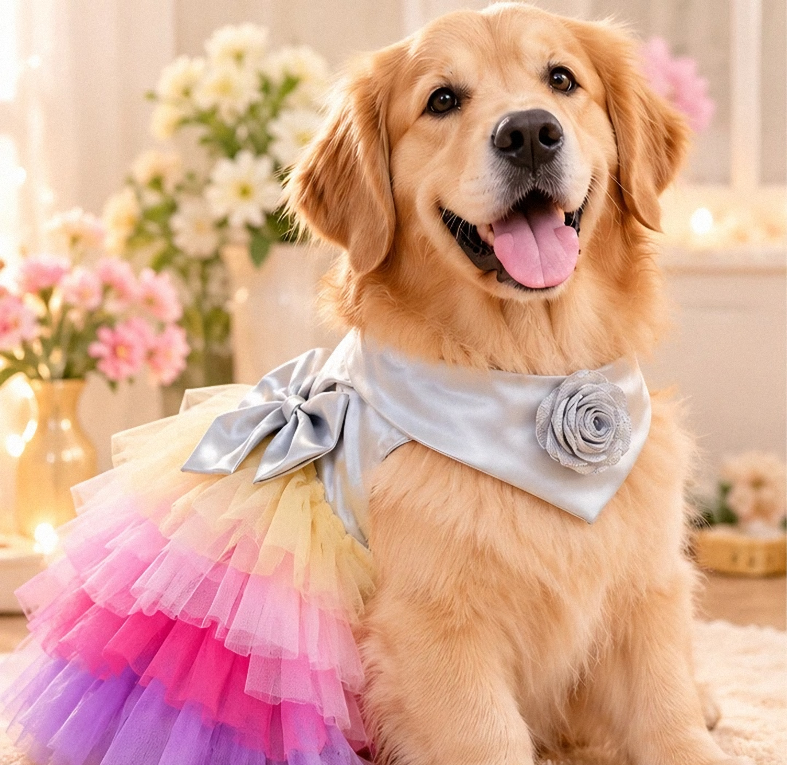

New · Festive Edit
FP12 · Indradhanush Tutu Dress
The Festive Edit is here
Kurta koti, sherwanis, lehenga dresses & more, for dogs and cats.
DM the code to order@furry.pooch

Kurta koti, sherwanis, lehenga dresses & more, for dogs and cats.